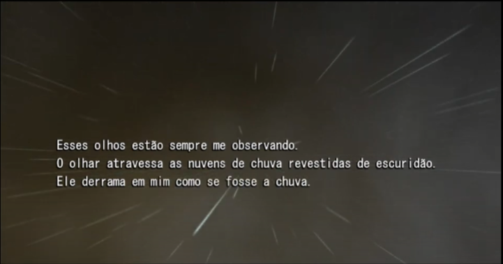
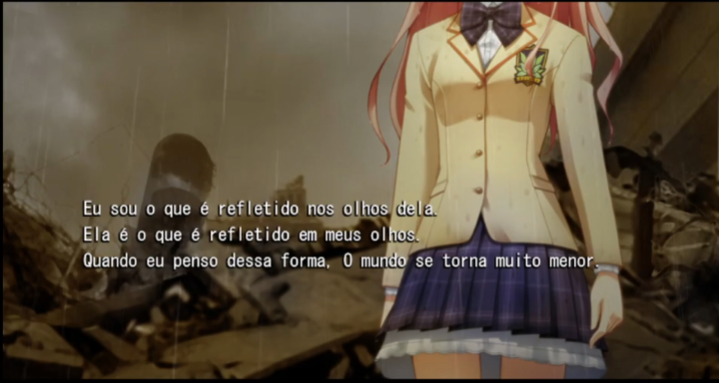

Update do dia 28/11/2021 sobre a tradução de Chaos;Head. Este update é sobre um dos problemas que foram citados no post anterior, tal problema seria a falta de caracteres com acento e "ç", esse problema foi resolvido alterando o que era mostrado na fonte ao colocar uma sequencia de letras especificas, ou seja, se eu colocar uma sequencia de letras especificas, essas letras viram um caractere com acento dentro do jogo.
Essa mudança foi possivel graças a uma pessoa mt legal, o Zeros7, ele fez todo o trabalho de subistituir os kanjis pelas letras com acentos e criou as combinações de letras que se transformam nas letras com acentos. Caso queira falar com ele, o discord ele é esse aqui Zeros7#8694.
Outro update importante, é que temos um novo revisor!. O novo revisor é o neonblank#7141, ele é uma pessoa bem legal uwu. Caso queira saber um pouco mais sobre ele, tem algumas informações na aba "Sobre" do site. Além disso, caso tenha alguma sugestão ou duvida favor me mandar mensagem no discord ou entrar em contato via o server no discord da fansub ^w^
"Esses olhos, de quem são eles?"